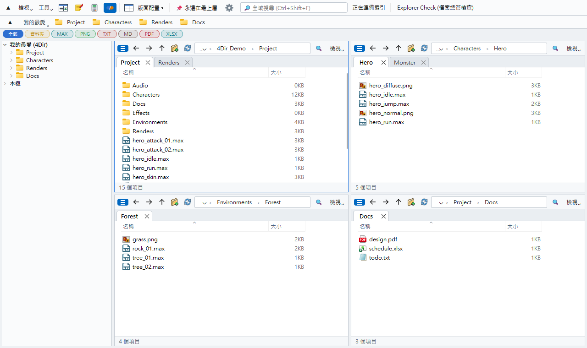
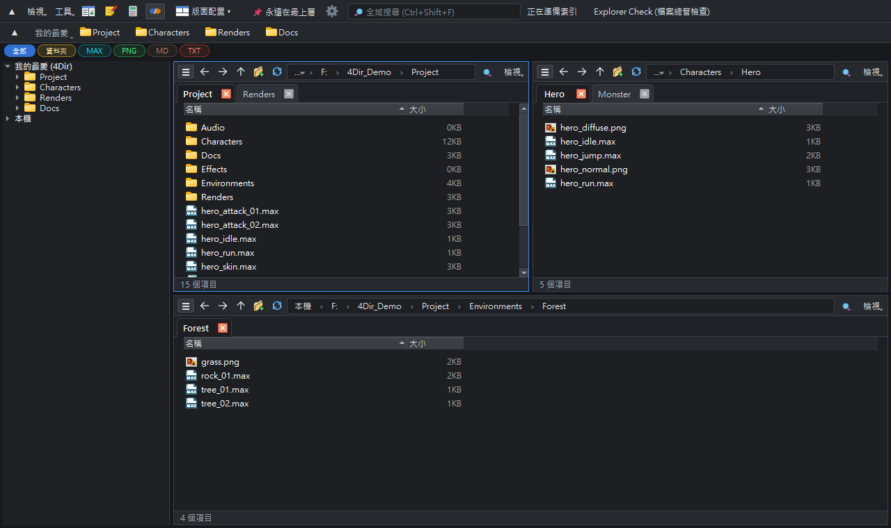

比 Windows 檔案總管更快的多窗格檔案管理員！！
適用於 Windows 10/11 的免費檔案管理員。免安裝，解壓縮即可使用。
Windows 10/11 64 位元 · 47 MB · 2026-11-06 · 免費
支持 4Dir
4Dir 免費且沒有廣告。如果它幫你省下時間，一點小小的贊助能讓更新持續下去。
v0.9.109 更新內容
- 新工具（右鍵 ▸ 4Dir 工具，或「工具」選單）：文字/十六進位檢視（F3）· 磁碟使用量樹狀圖 — 一眼看出資料夾或磁碟機被什麼佔滿 · 兩個窗格之間同步資料夾（A → B、A ← B 或雙向，含子資料夾，可選鏡像模式把多餘檔案移到資源回收筒）· 批次調整圖片大小和格式（JPG、PNG、WebP、BMP，不覆寫原圖）· 一次變更多個檔案的日期和屬性。
- 標籤：為檔案和資料夾加上文字標籤（右鍵 ▸ 標籤）——出現「標籤」欄，「工具 ▸ 依標籤檢視」可匯集各處帶標籤的項目。虛擬群組：不移動檔案，把不同資料夾的檔案歸在一個名稱下（右鍵 ▸ 加入虛擬群組）。自訂按鈕：在頂部列用選取的檔案執行你的程式（{files}、{folder}…）。FTP / FTPS：像資料夾一樣瀏覽伺服器（工具 ▸ 連線 FTP… 或在網址列輸入 ftp://…），可開啟、下載、上傳、重新命名和刪除；記住的密碼只存在 Windows 認證管理員。
- Win+E 開啟 4Dir（設定 ▸ 一般 ▸ Windows，預設關閉）：開啟一個只有一個窗格、顯示「本機」的新空視窗；關閉後恢復檔案總管。整理右鍵選單：★ 4Dir 我的最愛在最上面，常用項目其次，其餘放在「4Dir 工具 ▸」中。在空白處按右鍵時，授與存取權等子選單現在會正常顯示內容。設定齒輪移到「最上層顯示」之後，選單列末端的版本號已移除（標題中有），複製佇列文字也已翻譯。
- 修正：共用導覽窗格的寬度在重新啟動後保持不變，各窗格的導覽窗格在切換模式後也保持寬度；載入儲存的視窗配置後，共用窗格會跟隨作用中的窗格；檔案清單中數字鍵台 Enter（含 Ctrl/Alt+數字鍵台 Enter）可用；沒有可播放內容時，空白鍵會再次關閉預覽視窗。感謝在 GitHub 上回報問題。

功能
最多 20 個窗格
一鍵切換 1、2、3、4、6 窗格配置，或自訂最多 5 × 4 的格狀配置。每個窗格都有獨立分頁。
不拖慢電腦
直接讀取資料夾，不使用笨重的 Windows Shell 檢視。閒置時沒有計時器與輪詢——可放心與 3ds Max、遊戲等大型程式同時開著。
即時搜尋
輸入即可搜尋所有磁碟上的檔名。自有索引即時更新，不需要系統管理員權限。
SVN 狀態一目了然
直接讀取 .svn 顯示修改/新增/衝突標記，內部有變更的資料夾顯示為紅色。Git、Perforce 透過 Windows 覆疊圖示顯示。
操作就像檔案總管
相同的快速鍵、完整的 Windows 右鍵選單，可與檔案總管及其他程式互相拖放。按右鍵即可把 .webp 圖片另存為 PNG 或 JPG。
免安裝且重視隱私
設定只存在 4Dir 資料夾內。內建淺色/深色主題、10 種語言、批次重新命名、工作階段還原與檔案總管診斷。

安裝方式
- 用上方按鈕（或 GitHub 的 Releases）下載 zip。GitHub 上綠色的「Code → Download ZIP」只有原始碼，無法直接執行。
- 在 zip 上按右鍵 → 內容 → 勾選解除封鎖 → 確定。（否則每次執行都會出現安全性警告）
- 解壓縮到任意位置，雙擊 4Dir.exe。（被攔截時用 4Dir.vbs）
如果出現 Windows SmartScreen：按其他資訊 → 仍要執行。
驗證下載（選用）
在命令提示字元執行 certutil -hashfile 4Dir_v0.9.109.zip SHA256，結果應與下列相同：
44e3a91110c81fe6ad6c435bffe7054c5036f88a7023cad2b10c194e7f7bed2f
常見問題
真的免費嗎？
是的。4Dir 是免費開源軟體（GPL-3.0）。沒有廣告、不需帳號、沒有試用期。
可以在公司使用嗎？
可以。4Dir 是 GPL-3.0 免費軟體，公司也能免費使用，不需授權費或註冊。它不需安裝即可執行，請確認公司是否允許使用免安裝軟體。
真的比檔案總管快嗎？
以新視窗開啟含 1,000 個檔案的資料夾：4Dir 0.4 秒，檔案總管約 2 秒。多開一個視窗增加的記憶體：4Dir 約 10 MB，檔案總管約 130 MB。同一台電腦（Windows 11、SSD）各量 5 次。單一資料夾有數萬個檔案時差距會變小。
會傳送資料嗎？
不會傳送個人資料。每天只檢查一次是否有新版本（可在「工具」中關閉）。
遇到問題？
工具 → 儲存問題回報記錄，然後按「以電子郵件傳送」（或把 zip 寄到 support@4dir.net）。GitHub 使用者也可以開 issue。